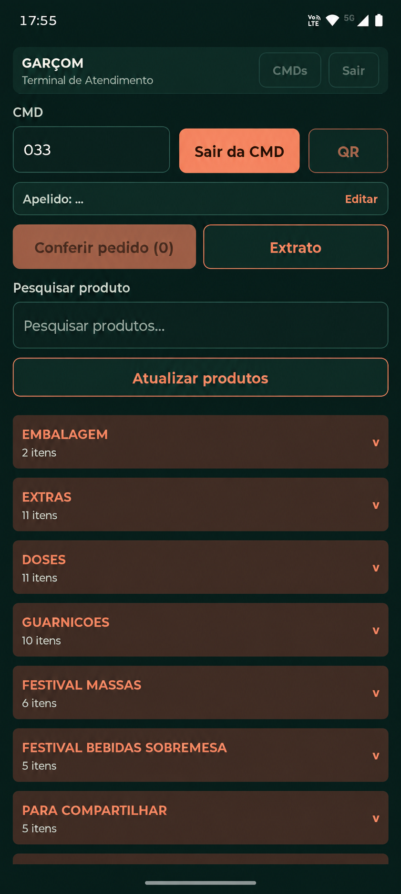
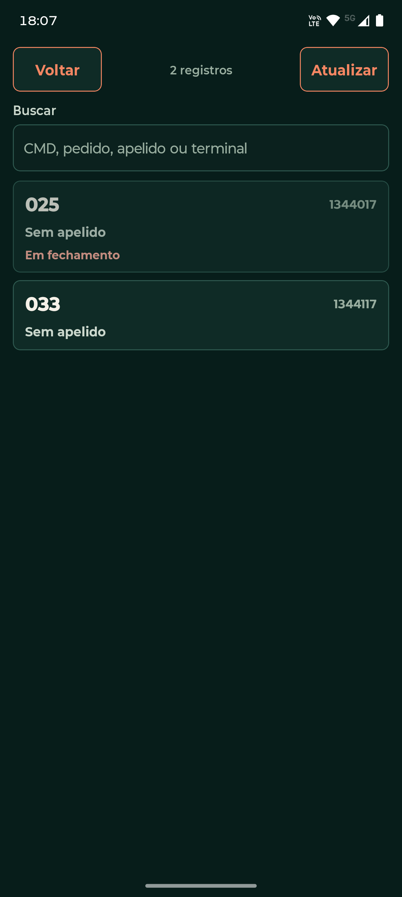
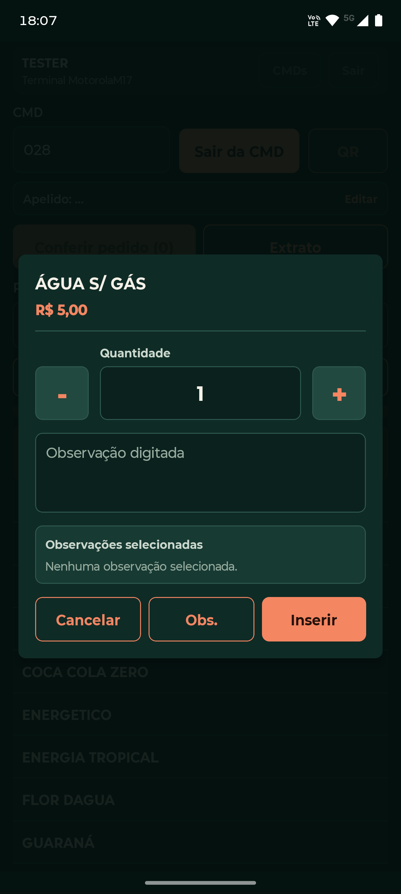
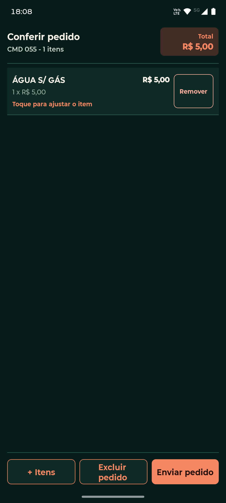
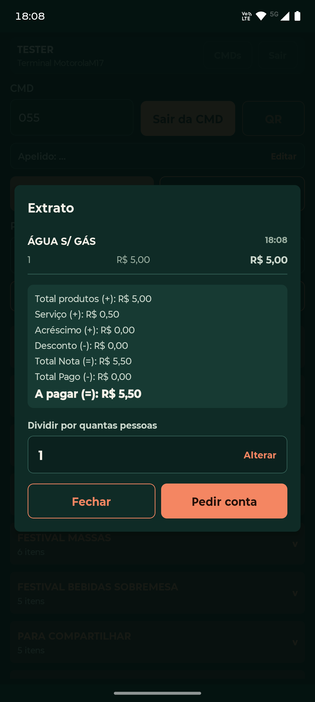

Com um terminal fixo
- 1Atender a mesa
- 2Guardar ou anotar o pedido
- 3Deslocar-se até o terminal
- 4Registrar as informações no sistema
Com o Fluxus Garçom, sua equipe identifica a mesa ou comanda, seleciona os produtos e registra o pedido pelo celular — sem precisar interromper o atendimento para voltar a um terminal.
Uso profissional para estabelecimentos que operam com o Fluxus Food.

Quando o garçom precisa anotar, memorizar ou caminhar até um terminal para lançar cada pedido, surgem etapas entre o que o cliente pediu e o que entra no sistema.
Menos deslocamento e menos etapas entre a mesa e a operação.
Veja como o Fluxus Garçom acompanha as etapas que fazem parte do atendimento do restaurante.
Consulte os atendimentos abertos e pesquise pela informação disponível, sem depender de outro ponto do salão.

Ajuste a quantidade e acrescente observações enquanto conversa com o cliente. O detalhe fica junto do item antes da inclusão.

Revise itens, quantidades e valores, faça ajustes e só então envie o pedido. A conferência acontece no mesmo lugar em que o atendimento começou.

Acompanhe os itens consumidos, os valores e o saldo da conta. Quando chegar a hora, informe a divisão entre pessoas e solicite a conta pelo aplicativo.

O aplicativo trabalha junto com o Fluxus Food e mantém mesas, comandas, produtos e regras reunidos no sistema que o restaurante já utiliza. A equipe ganha mobilidade no salão sem criar uma operação paralela.
Conheça o ecossistema Fluxus Food e converse com a Optimus sobre a operação do seu restaurante.